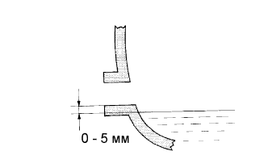

ЧАШКА ПЕРЕДНЕГО ДИФФЕРЕНЦИАЛА В СБОРЕ > УСТАНОВКА |
| 1. УСТАНОВИТЕ ЧАШКУ ПЕРЕДНЕГО ДИФФЕРЕНЦИАЛА В СБОРЕ |
Установите опору переднего дифференциала № 3 и закрепите ее 2 болтами.
Установите опору переднего дифференциала № 2 и закрепите ее 2 болтами.
Установите опору переднего дифференциала № 1 и закрепите ее 3 болтами.
Подоприте передний дифференциал домкратом.
Установите 2 передних крепежных болта и 2 гайки.
Подсоедините шланг и разъем.
Заверните гайку крепления переднего дифференциала № 1.
Установите кронштейн трубки сапуна переднего дифференциала и закрепите его болтом.
Опустите домкрат.
| 2. УСТАНОВИТЕ ПЕРЕДНИЙ КАРДАННЫЙ ВАЛ В СБОРЕ |
Установите передний карданный вал в сборе (Нажмите здесь).
| 3. УСТАНОВИТЕ ПЕРЕДНИЙ ПРИВОДНОЙ ВАЛ В СБОРЕ |
Установите передний приводной вал в сборе (Нажмите здесь).
| 4. УСТАНОВИТЕ ЛЕВЫЙ НИЖНИЙ РЫЧАГ ПЕРЕДНЕЙ ПОДВЕСКИ № 1 В СБОРЕ |
Установите нижний рычаг передней подвески № 1 в сборе (Нажмите здесь).
| 5. УСТАНОВИТЕ ПРАВЫЙ НИЖНИЙ РЫЧАГ ПЕРЕДНЕЙ ПОДВЕСКИ № 1 В СБОРЕ |
| 6. ПОДСОЕДИНИТЕ НАКОНЕЧНИК ЛЕВОЙ РУЛЕВОЙ ТЯГИ В СБОРЕ |
Подсоедините наконечник левой рулевой тяги в сборе (Нажмите здесь).
| 7. ПОДСОЕДИНИТЕ НАКОНЕЧНИК ПРАВОЙ РУЛЕВОЙ ТЯГИ В СБОРЕ |
| 8. УСТАНОВИТЕ ПЕРЕДНИЙ ДАТЧИК ЧАСТОТЫ ВРАЩЕНИЯ |
Установите передний датчик частоты вращения (Нажмите здесь).
| 9. УСТАНОВИТЕ ПЕРЕДНЕЕ КОЛЕСО |
| 10. ДОЛЕЙТЕ МАСЛО ДЛЯ ДИФФЕРЕНЦИАЛА |
Снимите пробку горловины дифференциала и прокладку.
|  |
Залейте в чашку заднего дифференциала в сборе столько масла, сколько требуется, чтобы уровень масла попал в зону 0-5 мм (0-0,197 дюйма) у нижней кромки отверстия наливной горловины.
| Тип дифференциала | Тип и вязкость масла | Заданные условия |
| Стандартный | Фирменное масло для дифференциала LT 75W-85 GL-5 от компании Тойота или аналогичное | 1,35-1,45 л (1,43-1,53 кварты США, 1,18-1,27 английской кварты) |
| Тип дифференциала | Тип и вязкость масла | Тип кузова | Заданные условия |
| Стандартный | Фирменное масло для дифференциала LT 75W-85 GL-5 от компании Тойота или аналогичное | Для 5-дверных моделей | 2,65 - 2,75 л (2,80 - 2,91 кварты США, 2,33 - 2,42 английской кварты) |
| Для 3-дверных моделей | 2,15 - 2,25 л (2,27 - 2,38 кварты США, 1,89 - 1,98 английской кварты) | ||
| С блокировкой дифференциала | Фирменное масло для дифференциала LT 75W-85 GL-5 от компании Тойота или аналогичное | Для 5-дверных моделей | 2,60 - 2,70 л (2,75 - 2,85 кварты США, 2,29 - 2,38 английской кварты) |
| Для 3-дверных моделей | 2,15 - 2,25 л (2,27 - 2,38 кварты США, 1,89 - 1,98 английской кварты) |
Установите новую прокладку и пробку наливной горловины дифференциала.
Совершите поездку на автомобиле и снова проверьте уровень масла.
Если необходимо, добавьте масло для дифференциала.
| 11. ПРОВЕРЬТЕ УРОВЕНЬ МАСЛА ДЛЯ ДИФФЕРЕНЦИАЛА |
Установите автомобиль на ровной поверхности.
Снимите пробку горловины дифференциала и прокладку.
Убедитесь в том, что уровень масла попадает в зону 0-5 мм (0-0,197 дюйма) у нижней кромки отверстия наливной горловины.
Установите новую прокладку и пробку наливной горловины дифференциала.
| 12. ПРОВЕРЬТЕ, НЕТ ЛИ УТЕЧКИ МАСЛА ДИФФЕРЕНЦИАЛА |
| 13. УСТАНОВИТЕ ЗАДНЮЮ ЗАЩИТУ КАРТЕРА ДВИГАТЕЛЯ В СБОРЕ (кроме моделей с 5L-E) |
Установите заднюю защиту картера двигателя и закрепите ее 4 болтами.
| 14. УСТАНОВИТЕ НИЖНЮЮ КРЫШКУ ТРАНСМИССИИ В СБОРЕ (кроме моделей с 5L-E) |
Установите нижнюю крышку трансмиссии и закрепите ее 2 болтами.
| 15. УСТАНОВИТЕ ЗАЩИТУ КАРТЕРА ДВИГАТЕЛЯ № 1 |
 |
Присоедините защиту картера двигателя к кузову автомобиля, как показано на рисунке.
Вверните 4 болта.
| 16. ПОДСОЕДИНИТЕ ПРОВОД К ОТРИЦАТЕЛЬНОМУ ВЫВОДУ АККУМУЛЯТОРНОЙ БАТАРЕИ |
| 17. ПРОВЕРЬТЕ СИГНАЛ ДАТЧИКА ЧАСТОТЫ ВРАЩЕНИЯ |
Проверьте сигнал датчика VSC (Нажмите здесь).
| 18. ПРОВЕРЬТЕ И ОТРЕГУЛИРУЙТЕ УГЛЫ УСТАНОВКИ ПЕРЕДНИХ КОЛЕС |
Проверьте и отрегулируйте углы установки передних колес (Нажмите здесь).